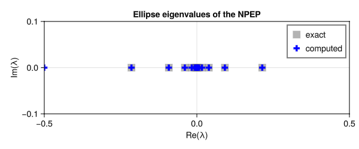
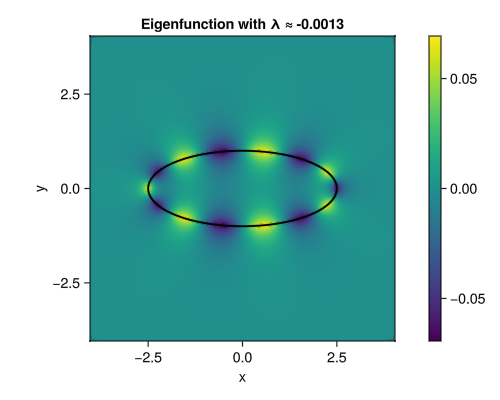
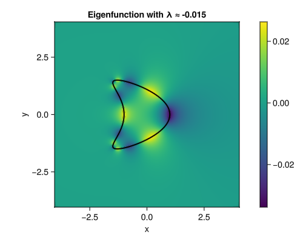
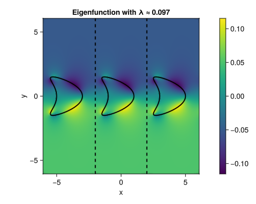

Plasmonic eigenvalue problem
- Reformulate a transmission eigenvalue problem using integral equations.
- Use a periodic Green's function
Problem definition
Given a bounded domain $\Omega \subset \mathbb{R}^2$ with boundary $\Gamma := \partial \Omega$, we focus in this tutorial on the solution of the so-called plasmonic eigenvalue problem, defined as follows:
Find $(u,\kappa) \in \dot{H}^1(\mathbb{R}^2) \times (-\infty,0)$, $u\neq0$, such that ```math \tag{PEP} \begin{aligned} \nabla \cdot [ a(\boldsymbol{x},\kappa) \nabla u(\boldsymbol{x})] = 0 \
u (\boldsymbol{x})\underset{|\boldsymbol{x}|\to \infty}{=} \mathcal{O}(|\boldsymbol{x}|^{-1}) \end{aligned} wheremath \begin{equation} \dot{H}^1(\mathbb{R}^2) \coloneqq \left{u \in L^{2}_{\textup{loc}}(\mathbb{R}^2) \, \left\vert \, \nabla u \in L^{2}(\mathbb{R}^2) \right.\right}, \; \quad a(\boldsymbol{x},\kappa) = \begin{cases} 1 & (\boldsymbol{x}\in\Omega) \
\kappa & (\boldsymbol{x}\in\Omega^c). \end{cases} \end{equation} ```
Since $a$ is piece-wise constant, it is convenient to reformulate the problem in terms of the jump conditions across the boundary $\Gamma$. We denote the jump of a function $u$ across $\Gamma$ as
\[\llbracket u \rrbracket := u|_{\Omega^+} - u|_{\Omega^-},\]
where $\Omega^+$ and $\Omega^-$ are the outside and inside of $\Omega$, respectively. The transmission conditions implicitly implied by the PEP problem are then
\[\begin{aligned} \llbracket u \rrbracket = 0, \quad \llbracket a(\boldsymbol{x},\kappa) \nabla u \rrbracket = 0 \end{aligned}\]
It is common to reformulate the PEP in terms of an integral equation by means of a single-layer ansatz, where one searches for a function $u$ on the form of
\[\begin{aligned} u(\boldsymbol{x}) = \int_{\Gamma} G(\boldsymbol{x},\boldsymbol{y}) \sigma(\boldsymbol{y}) \, \textup{d} s({\boldsymbol{y}}), \end{aligned}\]
where $G$ is the Green's function of the Laplace operator, and $\sigma : \Gamma \to \mathbb{R}$ is an unknown density function. By construction, $u$ satisfies Laplace's equation on $\mathbb{R}^2 \setminus \Gamma$, and the jump conditions across $\Gamma$ yields the equivalent Neumann-Poincaré eigenvalue problem
Find $(\sigma,\lambda) \in H^{-1/2}(\Gamma) \times (-1/2,1/2)$, $\sigma\neq0$, such that math \tag{NPEP} \begin{aligned} K^{\star} \sigma = \lambda \sigma \end{aligned} where $K^{\star}$ is the adjoint double-layer operator (also known as the Neumann-Poincaré operator), defined in terms of the Green's function $G$ as math \begin{aligned} K^{\star} \sigma(\boldsymbol{x}) = \int_{\Gamma} \partial_{\nu({\boldsymbol{y}})} G(\boldsymbol{x},\boldsymbol{y}) \sigma(\boldsymbol{y}) \, \textup{d} s({\boldsymbol{y}}), \end{aligned}
Finally, the eigenvalues of the NPEP are related to the eigenvalues of the PEP by the relation
\[\kappa = \frac{2 \lambda + 1}{2 \lambda - 1}\]
Implementation
We now write a function that takes a curve $\Gamma$, as well as some discretization parameters, and returns a set of $\left\{ \lambda_i, \sigma_i \right\}_{i=1}^{N}$ pairs that are the eigenvalues and eigenfunctions of the NPEP.
using Inti
using StaticArrays
using LinearAlgebra
using GLMakie
function npep(Γ; meshsize, qorder, period = Inf)
# discretize the curve Γ and create a quadrature rule
Q = Inti.Quadrature(Γ; meshsize, qorder)
# create the integral operator
op = isfinite(period) ? Inti.LaplacePeriodic1D(; dim=2, period) : Inti.Laplace(; dim = 2)
kernel = Inti.AdjointDoubleLayerKernel(op)
Kop = Inti.IntegralOperator(kernel, Q, Q)
# assemble a matrix representation of the operator (not handling possible singularities)
K₀ = Inti.assemble_matrix(Kop)
δK = Inti.adaptive_correction(Kop)
K = K₀ + δK
F = eigen(K)
λᵢ = F.values
uᵢ = map(eachcol(F.vectors)) do v
return Inti.SingleLayerPotential(op, Q)[real(v) / norm(v, Inf)]
end
return λᵢ, uᵢ
endnpep (generic function with 1 method)Validation
χ = (s) -> SVector(2.5 * cos(s), sin(s))
Γ = Inti.parametric_curve(χ, 0, 2π) |> Inti.Domain
r = 1 / 2.5
nmax = 10
λ = [sign(n) / 2 * exp(-2 * abs(n) * atanh(r)) for n in -nmax:nmax]
λᵢ, uᵢ = npep(Γ; meshsize = 0.1, qorder = 4)
fig = Figure(size = (600, 250))
ax = Axis(
fig[1, 1];
title = "Ellipse eigenvalues of the NPEP",
xlabel = "Re(λ)",
ylabel = "Im(λ)",
limits = (-0.5, 0.5, -0.1, 0.1),
)
scatter!(
ax,
real(λ),
imag(λ);
label = "exact",
color = :gray,
markersize = 20,
marker = :rect,
alpha = 0.6,
)
scatter!(
ax,
real(λᵢ),
imag(λᵢ);
label = "computed",
color = :blue,
markersize = 14,
marker = :cross,
)
axislegend(ax)
We can also visualize the eigenfunction corresponding to a given eigenvalue:
fig = Figure(size = (500, 400))
n = 8 # choose an eigenvalue to visualize
ax = Axis(
fig[1, 1];
title = "Eigenfunction with λ ≈ $(trunc(real(λᵢ[n]), sigdigits = 2))",
xlabel = "x",
ylabel = "y",
aspect = DataAspect(),
)
fun = (x, y) -> real(uᵢ[n](SVector(x, y)))
l = 4
xx = yy = range(-l, l, 100)
hm = heatmap!(ax, xx, yy, fun; colormap = :viridis, interpolate = true)
s = range(0, 2π, 100)
lines!(ax, getindex.(χ.(s), 1), getindex.(χ.(s), 2); color = :black, linewidth = 2, label = "Γ")
Colorbar(fig[1, 2], hm)
fig
Extensions
Other shapes
Now that we have validated the implementation of the NPEP for an ellipse, we can extend it to other shapes. We can use for instance a kite-shaped curve defined as
χ = (s) -> SVector(cos(s[1]) + 0.65 * cos(2 * s[1]) - 0.65, 1.5 * sin(s[1]))
Γ = Inti.parametric_curve(χ, 0, 2π) |> Inti.DomainDomain with 1 entity
EntityKey: (1, 7) => Inti.GeometricEntity with labels String[]Exactly the same code can then be used to obtain and visualize the eigenfunctions:
λᵢ, uᵢ = npep(Γ; meshsize = 0.1, qorder = 4)
fig = Figure(size = (500, 400))
n = 8 # choose an eigenvalue to visualize
ax = Axis(
fig[1, 1];
title = "Eigenfunction with λ ≈ $(trunc(real(λᵢ[n]), sigdigits = 2))",
xlabel = "x",
ylabel = "y",
aspect = DataAspect(),
)
fun = (x, y) -> real(uᵢ[n](SVector(x, y)))
l = 4
xx = yy = range(-l, l, 100)
hm = heatmap!(ax, xx, yy, fun; colormap = :viridis, interpolate = true)
s = range(0, 2π, 100)
lines!(ax, getindex.(χ.(s), 1), getindex.(χ.(s), 2); color = :black, linewidth = 2, label = "Γ")
Colorbar(fig[1, 2], hm)
Periodic case
Almost everything said above extends to the periodic case, where the PEP is posed on $[-\ell / 2, \ell / 2] \times \mathbb{R}$ instead of $\mathbb{R}^2$ with $\ell$ being the period, provided that the Green's function is replaced by a periodic one.
Find $(u,\kappa) \in \dot{H}^1([-\ell/2, \ell/2] \times \mathbb{R}) \times (-\infty,0)$, $u\neq0$, such that ```math \tag{PEP} \begin{aligned} \nabla \cdot [ a(\boldsymbol{x},\kappa) \nabla u(\boldsymbol{x})] = 0 \
\nabla u (\boldsymbol{x})\underset{|x2|\to \infty}{=} \mathcal{O}(|\boldsymbol{x}|^{-1}) \end{aligned} wheremath \begin{equation*} \dot{H}^1([-\ell/2, \ell/2] \times \mathbb{R}) \coloneqq \left{u \in L^{2}{\textup{loc}}([-\ell/2, \ell/2] \times \mathbb{R}) \, \left\vert \, \nabla u \in L^{2}([-\ell/2, \ell/2] \times \mathbb{R}) \right.\right}, \; \quad a(\boldsymbol{x},\kappa) = \begin{cases} 1 & (\boldsymbol{x}\in\Omega) \
\kappa & (\boldsymbol{x}\in\Omega^c). \end{cases} \end{equation*} ```
The code for the periodic case is very similar to the one above, with the only difference that we must pass a period to the npep function so that it uses the LaplacePeriodic1D kernel instead of the Laplace kernel. The rest of the code remains unchanged.
period = 4
λᵢ, uᵢ = npep(Γ; meshsize = 0.1, qorder = 4, period)
fig = Figure(size = (500, 400))
n = length(λᵢ) - 2 # choose an eigenvalue to visualize
ax = Axis(
fig[1, 1];
title = "Eigenfunction with λ ≈ $(trunc(real(λᵢ[n]), sigdigits = 2))",
xlabel = "x",
ylabel = "y",
aspect = DataAspect(),
)
fun = (x, y) -> real(uᵢ[n](SVector(x, y)))
l = 1.5*period
xx = yy = range(-l, l, 100)
hm = heatmap!(ax, xx, yy, fun; colormap = :viridis, interpolate = true)
s = range(0, 2π, 100)
lines!(ax, getindex.(χ.(s), 1), getindex.(χ.(s), 2); color = :black, linewidth = 2)
lines!(ax, getindex.(χ.(s), 1) .+ period, getindex.(χ.(s), 2); color = :black, linewidth = 2)
lines!(ax, getindex.(χ.(s), 1) .- period, getindex.(χ.(s), 2); color = :black, linewidth = 2)
vlines!(ax, [-period/2, period/2], color = :black, linewidth = 2, linestyle = :dash)
Colorbar(fig[1, 2], hm)
Corners
TODO: